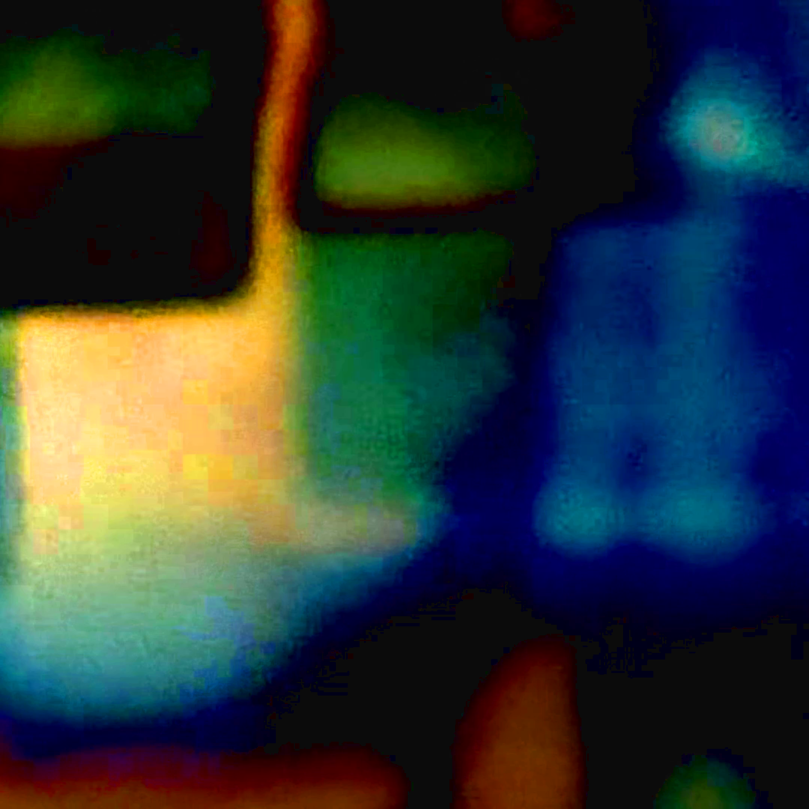
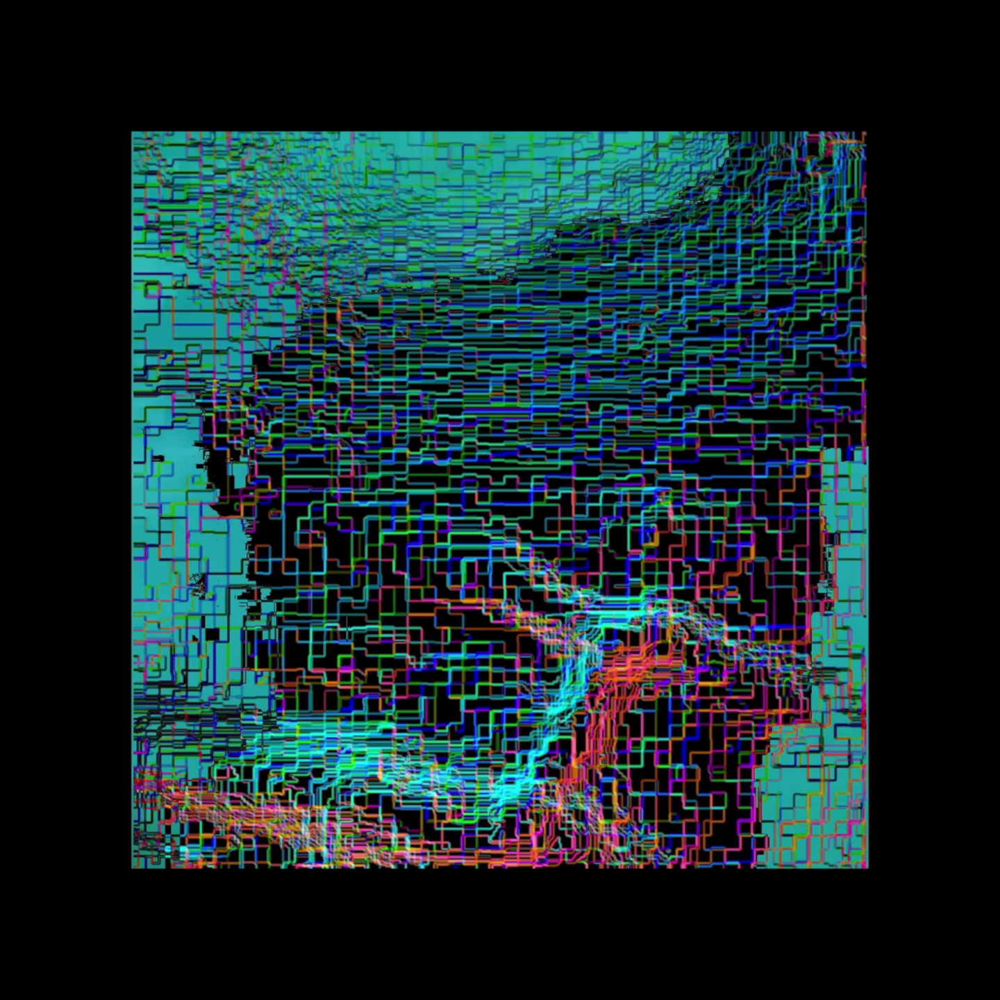
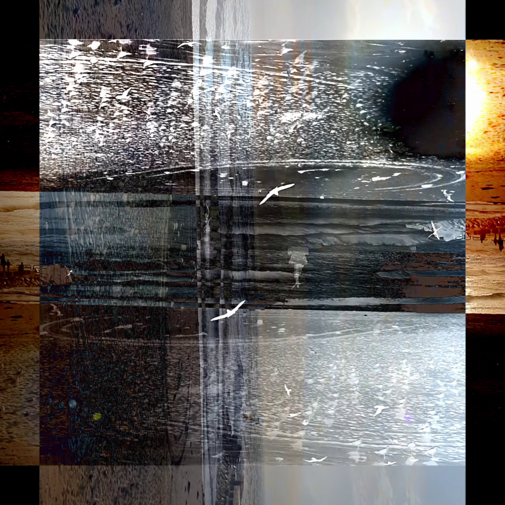
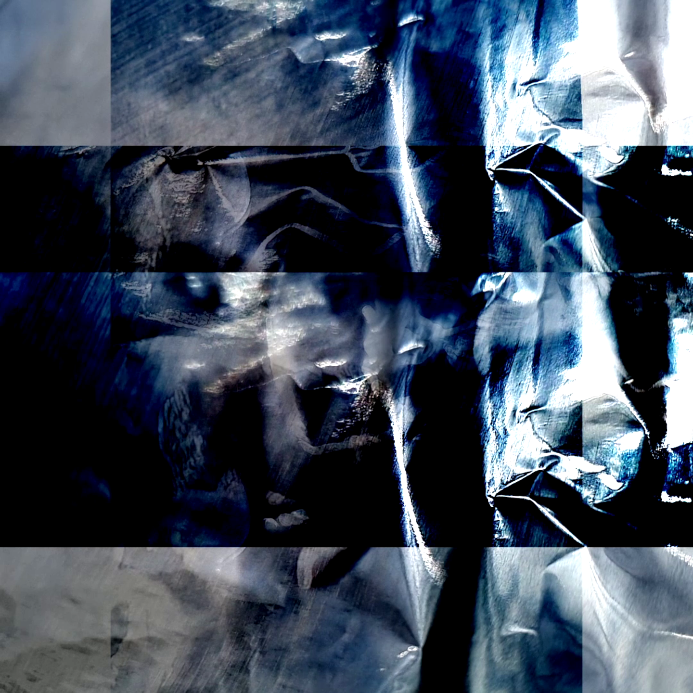

composer / instrumentalist / multimedia artist




Gordon Bazsali is a musician and visual artist from Chicago based in Busan, South Korea. His activities include composing, orchestration, sound design, performance, and creating multimedia pieces, often combining all of these.
Gordon has composed for film, dance, art installations, poetry readings,online venues and the concert stage.
He holds a Bachelor of Music Performance from Illinois Wesleyan University and a Master of Music Composition from Northwestern University.
During his career, which began at the age of 15, Gordon has performed professionally on trumpet and occasionally on keyboard, guitar, and bass guitar in a wide variety of styles, but mostly jazz, rock, soul, reggae, R&B, blues, classical, electronic, electroacoustic, avant-garde, and various styles from around the globe.
He has performed in the U.S., Canada, South Korea, Germany, and Russia.
Particular interests include ambient, generative, musique concrete, computer, noise, aleatoric and improvisational music as well as cross-disciplinary collaboration.